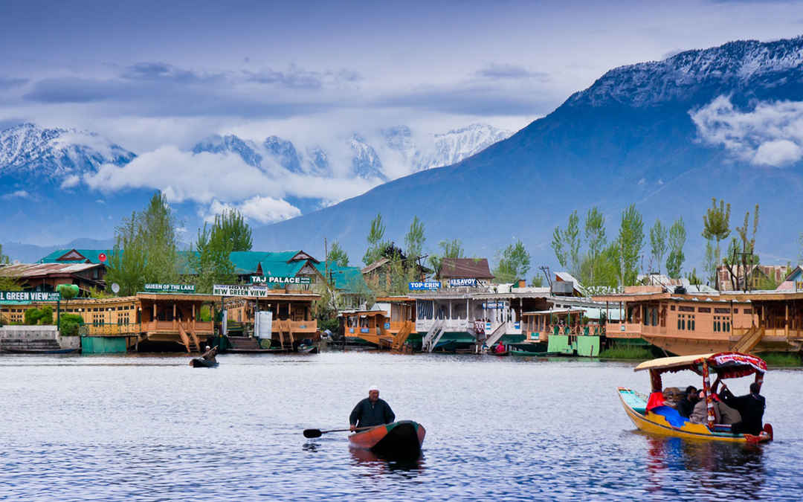

Picturesque and enchanting, Srinagar is
cradled high in the lofty green Himalayas
and hailed all over the world for its
incredible natural beauty. Surrounded by
mountain peaks, lush green valleys,
glistening lakes, temples and spectacular
Mughal-era gardens, the city has inspired
poets through centuries. The summer capital
of Jammu and Kashmir, Srinagar, is situated
in the heart of the Kashmir Valley with the
Nagin and the Dal Lake adding to its beauty.

About Tour
Day 1:
Jamia Masjid Srinagar
Hari Parbat
Chashma Shahi Garden
Indira Gandhi Memorial Tulip Garden
Dal Lake
Day 2:
Nishat Garden
Shalimar Bagh Mughal Garden
Dachigam National Park
Aru Valley